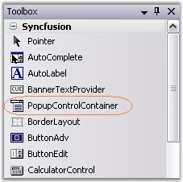

This section deals with creating a simple popup with the help of PopupControlContainer control.
Creating PopupControlContainer
The PopupControlContainer control provides full support for the Windows Forms designer. To use a PopupControlContainer control in your application, all you need to do is drag and drop the PopupControlContainer control from the controls toolbox onto your form.

Figure 381: PopupControlContainer in the Toolbox
The PopupControlContainer can be created programmatically as follows.
3. Include the Shared.Base assembly reference to Reference folder.
4.
5. Create an instance of PopupControlContainer and add to the Form.
|
[C#]
private Syncfusion.Windows.Forms.PopupControlContainer popupControlContainer1; this.popupControlContainer1=new Syncfusion.Windows.Forms.PopupControlContainer(); this.Controls.Add(this.popupControlContainer1); |
|
[VB.NET]
Private popupControlContainer1 As Syncfusion.Windows.Forms.PopupControlContainer Me.popupControlContainer1 = New Syncfusion.Windows.Forms.PopupControlContainer() Me.Controls.Add(Me.popupControlContainer1) |
6. We can add child controls to the PopupControlContainer and associate it as a popup for other controls like RichTextBox. Refer How to show PopupControlContainer as the popup for a RichTextBox control? topic.
A sample which illustrates how to create a custom PopupControlContainer and assign it to a control is available in the below sample installation location.
..\My Documents\Syncfusion\EssentialStudio\Version Number\Windows\Tools.Windows\Samples\2.0\Editors Package\Container controls\PopupContainer\PopupContainerDemo
See also